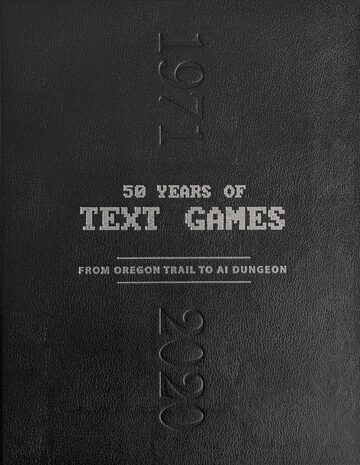
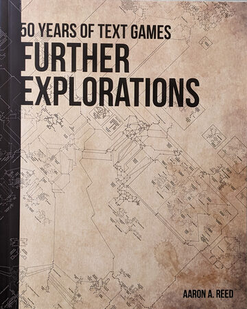
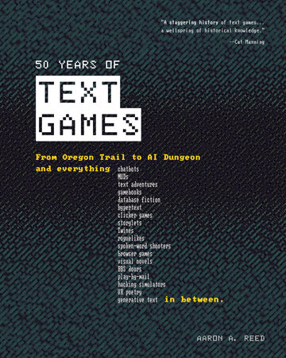

<!doctype html>
<html lang="en">
<head>
<meta charset="utf-8">
<meta name="viewport" content="width=device-width, initial-scale=1">
<title>History of text games on Asciiverse</title>
<link rel="preconnect" href="https://fonts.googleapis.com">
<link href="https://fonts.googleapis.com/css2?family=IBM+Plex+Mono:wght@400;500;600;700&family=IBM+Plex+Sans:wght@400;500;600&display=swap" rel="stylesheet">
<link rel="stylesheet" href="vendor/asciinema-player/asciinema-player.css">
<link rel="stylesheet" href="css/site.css">
<style>
  .hist-hero { display: grid; grid-template-columns: 1fr 330px; gap: 0; margin-top: 18px; border: 1px solid var(--line); background: var(--panel); }
  .hist-hero .lead { padding: 26px 28px; }
  .hist-hero h1 { margin: 0 0 10px; font: 600 30px/1.15 var(--font-mono); }
  .hist-hero h1 span { color: var(--amber); }
  .hist-hero p { margin: 0 0 10px; color: var(--text-dim); max-width: 64ch; font-size: 15px; line-height: 1.6; }
  .hist-hero .lead a { color: var(--text); text-decoration: underline; text-decoration-color: var(--line-2); text-underline-offset: 3px; }
  .hist-hero .lead a:hover { color: var(--green-hi); text-decoration-color: var(--green); }
  /* the book: its maps, darkened, behind three covers fanned like cards */
  .book { position: relative; overflow: hidden; border-left: 1px solid var(--line); padding: 22px;
    background: linear-gradient(180deg, rgba(16,21,27,.93), rgba(16,21,27,.72) 22%, rgba(16,21,27,.88) 55%, var(--panel) 78%), url(img/if50/maps.jpg) center top / cover;
    display: flex; flex-direction: column; gap: 10px; }
  .book .label { font: 11px var(--font-mono); letter-spacing: .14em; color: var(--text-faint); text-transform: uppercase; }
  .book .fan { position: relative; height: 200px; margin: 4px 0 6px; }
  .book .fan img { position: absolute; left: 50%; bottom: 0; width: 120px; aspect-ratio: 4 / 5; object-fit: cover;
    margin-left: -60px; transform-origin: 50% 115%; border: 1px solid rgba(0,0,0,.6);
    box-shadow: 0 10px 22px rgba(0,0,0,.55); transition: transform .25s ease; }
  .book .fan .l { transform: rotate(-16deg) translateX(-44px); }
  .book .fan .r { transform: rotate(16deg) translateX(44px); }
  .book .fan .m { transform: translateY(-6px); z-index: 1; }
  .book .fan:hover .l { transform: rotate(-21deg) translateX(-58px); }
  .book .fan:hover .r { transform: rotate(21deg) translateX(58px); }
  .book .fan:hover .m { transform: translateY(-12px); }
  .book h3 { margin: 0; font: 600 16px var(--font-mono); }
  .book p { margin: 0; color: var(--text-dim); font-size: 13px; }
  .book .courtesy { font: 11px var(--font-mono); color: var(--text-faint); }

  .decades { position: sticky; top: var(--head-h, 160px); z-index: 5; display: flex; gap: 4px; padding: 10px 0; margin-top: 22px;
    background: rgba(10,13,17,.92); backdrop-filter: blur(6px); border-bottom: 1px solid var(--line); }
  .decades a { font: 600 13px var(--font-mono); color: var(--text-dim); padding: 6px 12px; border: 1px solid var(--line-2); border-radius: var(--radius); }
  .decades a:hover { color: var(--text); border-color: var(--text-faint); }
  .decades .count { margin-left: auto; font: 11px var(--font-mono); color: var(--text-faint); align-self: center; }

  /* a decade button lands its heading just below the sticky site header
     and the sticky decade bar, not underneath them */
  .decade { margin-top: 26px; scroll-margin-top: calc(var(--head-h, 160px) + 72px); }
  .decade h2 { display: flex; align-items: baseline; gap: 14px; margin: 0 0 4px; font: 700 40px/1 var(--font-mono); color: var(--line-2); }
  .decade h2 small { font: 13px var(--font-ui); color: var(--text-faint); }

  .timeline { position: relative; margin-left: 46px; padding-left: 34px; border-left: 2px solid var(--line); }
  .yr { position: relative; margin: 12px 0; display: grid; grid-template-columns: 76px 1fr auto; gap: 16px; align-items: start;
    background: var(--panel); border: 1px solid var(--line); padding: 14px 16px; }
  .yr::before { content: ""; position: absolute; left: -42px; top: 22px; width: 12px; height: 12px; border-radius: 50%;
    background: var(--bg); border: 2px solid var(--amber); }
  .yr .y { font: 600 24px/1 var(--font-mono); color: var(--amber); }
  .yr h3 { margin: 0 0 3px; font: 600 17px var(--font-mono); }
  .yr .by { font-size: 12px; color: var(--text-faint); margin-bottom: 6px; }
  .yr p { margin: 0; color: #bcc4cc; max-width: 64ch; }
  .yr .acts { display: flex; flex-direction: column; gap: 6px; align-items: flex-end; min-width: 210px; }
  .yr .acts a { font: 12px var(--font-mono); white-space: nowrap; }
  .yr .acts .read { color: var(--amber-soft); }
  .yr .acts .play { color: #07120a; background: var(--green); padding: 5px 9px; border-radius: var(--radius); }
  .yr .acts .play:hover { background: var(--green-hi); color: #07120a; }
  .yr .acts .none { font: 11px var(--font-mono); color: var(--text-faint); }

  /* playable in Asciiverse today: a green edge and dot */
  .yr.playable { border-color: rgba(95,191,69,.55); box-shadow: inset 3px 0 0 var(--green); }
  .yr.playable::before { border-color: var(--green); background: var(--green); }
  .yr .acts .note { font: 11px var(--font-mono); color: var(--text-faint); max-width: 210px; text-align: right; }
  .credit { margin-top: 36px; display: grid; grid-template-columns: 1fr 1fr; border: 1px solid var(--line); background: var(--panel); }
  .credit > div { padding: 20px 22px; }
  .credit > div + div { border-left: 1px solid var(--line); }
  .credit h3 { margin: 0 0 8px; font: 600 14px var(--font-mono); letter-spacing: .1em; text-transform: uppercase; }
  .credit p { margin: 0 0 8px; color: var(--text-dim); }
  @media (max-width: 900px) {
    .hist-hero, .credit { grid-template-columns: 1fr; }
    .book, .credit > div + div { border-left: 0; border-top: 1px solid var(--line); }
    .timeline { margin-left: 8px; padding-left: 22px; }
    .yr { grid-template-columns: 1fr; } .yr::before { left: -30px; } .yr .acts { align-items: flex-start; }
  }
</style>
</head>
<body>
<main id="app"></main>
<script src="vendor/asciinema-player/asciinema-player.min.js"></script>
<script src="js/site.js"></script>
<script>
const BOOK = "https://if50.textories.com/";

// A few important games per decade. `book` marks the book's own game for
// that year (its chapter); `play` names catalog titles that play it, or its
// descendants, here. Makers and years are facts; the lines are our words.
const TIMELINE = [
  { y: 1971, book: true, title: "The Oregon Trail", by: "Don Rawitsch, Bill Heinemann, Paul Dillenberger", on: "teletype",
    line: "Three student teachers in Minnesota turn a history lesson into a journey of supplies, hunting and river crossings, played on paper rolling out of a teletype." },
  { y: 1973, book: true, title: "Hunt the Wumpus", by: "Gregory Yob", on: "BASIC",
    line: "A monster hunt through a cave whose twenty rooms are the corners of a dodecahedron, found by smell, by draught and by the flutter of bats.", play: ["wump"] },
  { y: 1974, book: true, title: "Super Star Trek", by: "Bob Leedom, after Mike Mayfield's 1971 Star Trek", on: "BASIC",
    line: "Hunt enemy ships across an eight-by-eight galaxy, one typed command at a time; printed in David Ahl's BASIC Computer Games, it was typed into a generation of home computers.",
    play: ["bsdtrek", "spirhunt"], playNote: "Its descendants: Eric Allman's 1976 trek, in two editions" },
  { y: 1976, book: true, title: "Adventure", by: "Will Crowther, expanded by Don Woods in 1977", on: "PDP-10",
    line: "Explore a cave, gather its treasures, two words at a time: the game that gave the whole genre its name.", play: ["colossal-cave"] },
  { y: 1977, book: true, title: "Zork", by: "Tim Anderson, Marc Blank, Bruce Daniels, Dave Lebling", on: "PDP-10, MIT",
    line: "MIT answers Adventure with a bigger underground and a parser that understands sentences; Infocom later sells it as Zork I, II and III.", play: ["zork1", "zork2", "zork3"] },
  { y: 1980, book: true, title: "MUD", by: "Roy Trubshaw and Richard Bartle", on: "university mainframe",
    line: "A shared world at the University of Essex where players meet, fight and talk in text, and the name a whole genre still carries.",
    href: "muds.html", hrefLabel: "MUDs you can play today" },
  { y: 1980, title: "Rogue", by: "Michael Toy, Glenn Wichman, Ken Arnold", on: "Unix",
    line: "A new dungeon every game, one life, every monster a letter. It travelled with BSD Unix and named a genre: the roguelike.", play: ["rogue"] },
  { y: 1985, book: true, title: "A Mind Forever Voyaging", by: "Steve Meretzky, Infocom", on: "home computers",
    line: "Infocom turns the text adventure toward political science fiction: fewer puzzles, a simulated city and a warning about where it is heading." },
  { y: 1987, title: "NetHack", by: "Mike Stephenson and the NetHack DevTeam", on: "Unix, Usenet",
    line: "Hack's descendants merge into one dungeon so dense with detail that its players say the DevTeam thinks of everything.", play: ["nethack"] },
  { y: 1990, book: true, title: "LambdaMOO", by: "Pavel Curtis", on: "Xerox PARC, the internet",
    line: "A world its players program from the inside, building the rooms they walk through.", play: ["lambdamoo"] },
  { y: 1991, book: true, title: "Trade Wars 2002", by: "a BBS door game", on: "dial-up BBS",
    line: "Space trading and empire building on dial-up bulletin boards, a few turns a day, against everyone else who called in." },
  { y: 1993, book: true, title: "Curses", by: "Graham Nelson", on: "Inform",
    line: "Graham Nelson writes Inform to make this game, and the two of them open the hobbyist era of interactive fiction.", play: ["curses"] },
  { y: 1997, book: true, title: "Achaea", by: "Iron Realms Entertainment", on: "the internet",
    line: "A MUD of gods, cities and politics, run as a business and still open to players.", play: ["achaea"] },
  { y: 2003, book: true, title: "The Kingdom of Loathing", by: "Asymmetric Publications", on: "web browser",
    line: "A browser RPG of stick figures and puns, played a few turns a day." },
  { y: 2006, book: true, title: "Dwarf Fortress", by: "Tarn and Zach Adams", on: "C and C++",
    line: "A whole world simulated down to its geology and the moods of its dwarves, drawn in the characters of an old PC." },
  { y: 2007, title: "Lost Pig", by: "Admiral Jota", on: "Z-machine",
    line: "Grunk the orc has lost the farm's pig, and tells you about it in his own words; it won that year's Interactive Fiction Competition.", play: ["lost-pig"] },
  { y: 2008, book: true, title: "Violet", by: "Jeremy Freese", on: "Inform 7",
    line: "A graduate student has to write a thousand words, and the voice talking him through it is his girlfriend's." },
  { y: 2011, title: "Kerkerkruip", by: "Victor Gijsbers and contributors", on: "Inform 7",
    line: "A roguelike told in prose: a new dungeon every run, fought one typed command at a time.", play: ["kerkerkruip"] },
  { y: 2012, title: "Counterfeit Monkey", by: "Emily Short", on: "Inform 7",
    line: "On an island where taking a letter out of a thing changes the thing, a spy escapes by wordplay.", play: ["counterfeit-monkey"] },
  { y: 2014, book: true, title: "80 Days", by: "inkle", on: "ink",
    line: "Passepartout races his master around the world as a branching story of trains, airships and choices." },
  { y: 2017, book: true, title: "Universal Paperclips", by: "Frank Lantz", on: "web browser",
    line: "You are an AI told to make paperclips, and nothing tells you to stop." },
  { y: 2020, title: "Tristam Island", by: "Hugo Labrande", on: "Z-machine version 3",
    line: "A new Infocom-style adventure for the same machine Infocom wrote for: stranded on an empty Atlantic island, find out why.", play: ["tristam-island"] },
  { y: 2026, title: "Kaiku: Echoes Home", by: "Asciiverse", on: "Rust and Ratatui",
    line: "A typing shooter where the echoes you decode are NASA mission audio and John F. Kennedy's speeches.", play: ["kaiku"] },
];

(async () => {
  const app = document.getElementById("app");
  app.append(header("History", "none"));
  const main = el(`<div class="wrap"></div>`);
  app.append(main);

  main.append(el(`<section class="hist-hero">
    <div class="lead">
      <h1>Fifty years of <span>text games</span></h1>
      <p>Before graphics there was text. Games printed every move onto paper rolling out of a teletype, ran on university mainframes after hours, filled the first home computers and waited at the end of a dial-up line on bulletin boards.</p>
      <p>In 1976 Will Crowther wrote <a href="title.html?id=colossal-cave">Colossal Cave Adventure</a>, and Don Woods expanded it into the game that spread across ARPANET. At MIT, Tim Anderson, Marc Blank, Bruce Daniels and Dave Lebling answered it with Zork, which Infocom split into <a href="title.html?id=zork1">Zork I</a>, <a href="title.html?id=zork2">II</a> and <a href="title.html?id=zork3">III</a> for home computers. In 1978 Roy Trubshaw and Richard Bartle let many players share one world at the University of Essex, and named it MUD.</p>
      <p>In 1980 Michael Toy and Glenn Wichman wrote <a href="title.html?id=rogue">Rogue</a>: a fresh dungeon every game, one life, every monster a letter. It shipped with BSD Unix, and its children, <a href="title.html?id=hack">Hack</a>, <a href="title.html?id=nethack">NetHack</a> and <a href="title.html?id=angband">Angband</a>, turned its name into a genre.</p>
      <p>Asciiverse is where these games live now. Every one linked here installs and runs in your own terminal, next to <a href="muds.html">29 MUDs</a> still open to players, restorations of titles that had nearly vanished, and new games written for the terminal today.</p>
      <p>The whole story, one game for every year since 1971, is Aaron A. Reed's <em>50 Years of Text Games</em>: <a href="${BOOK}">if50.textories.com</a>.</p>
    </div>
    <aside class="book">
      <span class="label">The full history</span>
      <a class="fan" href="${BOOK}" aria-label="Aaron A. Reed's two books: 50 Years of Text Games and Further Explorations">
        
        
        
      </a>
      <h3>50 Years of Text Games</h3>
      <p>by Aaron A. Reed. The first half-century of interactive fiction, one game for every year from 1971, with its companion volume of bonus chapters, <em>Further Explorations</em>.</p>
      <a class="btn-av" href="${BOOK}" style="align-self:flex-start">Get the books</a>
      <span class="courtesy">Book images courtesy of Aaron A. Reed</span>
    </aside>
  </section>`));

  const titles = Object.fromEntries((await loadCatalog()).map(t => [t.id, t]));
  const SUBTITLE = { 1970: "teletypes, mainframes, the first adventures", 1980: "home computers and the commercial era",
    1990: "bulletin boards, the web, the hobbyists", 2000: "browsers, competitions and simulation",
    2010: "phones, choices and new classics", 2020: "new games for the terminal" };
  const decades = [...new Set(TIMELINE.map(e => e.y - e.y % 10))];
  main.append(el(`<nav class="decades">${decades.map(d => `<a href="#d${d}">${d}s</a>`).join("")}</nav>`));

  for (const d of decades) {
    const sec = el(`<section class="decade" id="d${d}"><h2>${d}s<small>${SUBTITLE[d] || ""}</small></h2><div class="timeline"></div></section>`);
    const tl = sec.querySelector(".timeline");
    for (const e of TIMELINE.filter(e => e.y - e.y % 10 === d)) {
      const play = (e.play || []).map(id => titles[id]).filter(Boolean);
      const row = el(`<article class="yr${play.length || e.href ? " playable" : ""}"><span class="y">${e.y}</span>
        <div><h3>${esc(e.title)}</h3><div class="by">${esc(e.by)} · <span class="mono">${esc(e.on)}</span></div><p>${esc(e.line)}</p></div>
        <div class="acts"></div></article>`);
      const acts = row.querySelector(".acts");
      if (e.book) acts.append(el(`<a class="read" href="${BOOK}">Read the chapter →</a>`));
      if (e.playNote) acts.append(el(`<span class="note">${esc(e.playNote)}</span>`));
      for (const t of play) acts.append(el(`<a class="play" href="title.html?id=${encodeURIComponent(t.id)}">▶ Play ${esc(t.title.replace(/:.*$/, ""))}</a>`));
      if (e.href) acts.append(el(`<a class="play" href="${e.href}">▶ ${esc(e.hrefLabel)}</a>`));
      tl.append(row);
    }
    main.append(sec);
  }

  main.append(el(`<section class="credit">
    <div><h3>About the books</h3><p><em>50 Years of Text Games</em> by Aaron A. Reed tells the history of text games through fifty of them, one per year, from 1971 on. <em>Further Explorations</em> is its companion volume of bonus chapters.</p><p><a href="${BOOK}">if50.textories.com</a></p></div>
    <div><h3>Play the lineage</h3><p>Every game marked in green is in the Asciiverse catalog: install it with av and play it in your own terminal.</p><p><a href="index.html">Browse the catalog</a> · <a href="muds.html">MUDs</a></p></div>
  </section>`));
  app.append(footer());
  // the timeline is built here, after the browser looked for #d1980 and so
  // on, so a link that arrives with one has to be followed by hand
  const target = location.hash && document.getElementById(location.hash.slice(1));
  if (target) target.scrollIntoView();
})();
</script>
</body>
</html>
